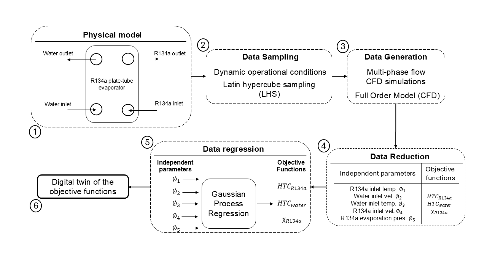

Introduction
This project introduces a machine-learning framework to develop digital twins of evaporators—critical components in heat pump systems. A plate-tube evaporator using R134a refrigerant is modeled within a single-stage heat pump that recovers heat from wastewater.
The approach combines high-fidelity unsteady CFD simulations with nonlinear regression to capture transient heat transfer behavior. Five independent variables are considered: refrigerant and water inlet velocities and temperatures, and evaporation pressure. The model targets three key outputs: heat transfer coefficients on both fluid sides and the refrigerant outlet dryness fraction.
Training data is generated using Latin Hypercube Sampling across the input space, with each case solved using RANS equations coupled with the Volume of Fluid (VOF) method to capture phase change in the 3D domain. Gaussian Process Regression models are then trained on this dataset to create accurate, time-resolved surrogate models representing the system’s dynamic behavior.
Methodology
Click on each step below to explore more details:

Results
Below is a sample result comparing the predicted and actual heat transfer coefficients and dryness fraction over time. The Gaussian Process Regression surrogate model shows excellent accuracy in replicating the CFD-based objective functions with low error.